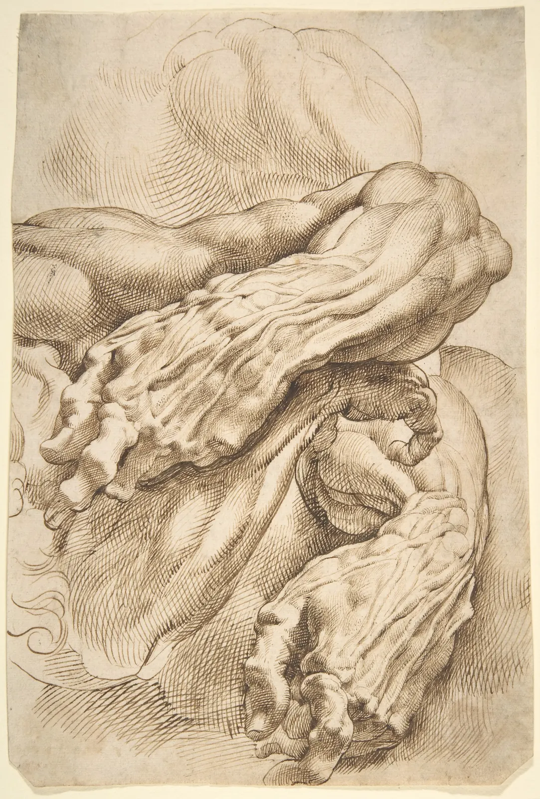
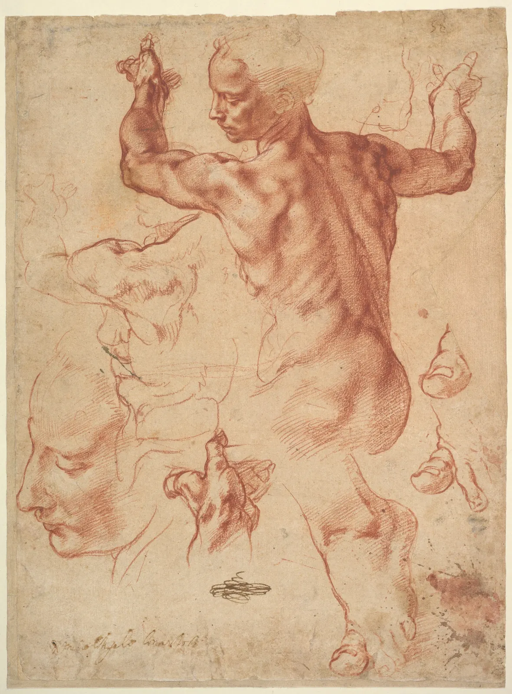

몸의 구조
처음 사람을 그리면 팔이 고무호스처럼 휘고, 손은 다섯 개의 소시지가 붙은 장갑이 된다. 비례(11장)를 맞춰도 그렇다. 길이는 맞는데 그 안에 뼈가 없기 때문이다. 팔꿈치는 한쪽으로만 접히고, 아래팔은 두 개의 뼈가 서로 엇갈리며 돌고, 손은 상자에서 원통 다섯 개가 뻗어 나온 모양이다. 이 장은 의사가 되려는 것이 아니라 그리기 위해 몸 속을 들여다본다. 이름을 외우는 대신, 뼈가 길이를 정하고 관절이 움직임을 정하고 근육이 덩어리를 만든다는 세 가지를 손으로 확인한다.
- 몸을 머리·흉곽·골반의 세 덩어리와 그것을 잇는 척추로 단순화해 세운다.
- 피부 바로 밑에 뼈가 드러나는 곳(골격 표지점)을 알고 그림의 기준점으로 쓴다.
- 경첩 관절과 절구 관절이 움직이는 방향과 대략의 범위를 알고, 불가능한 자세를 알아본다.
- 아래팔의 두 뼈가 엇갈리며 손바닥을 뒤집는 원리와, 근육이 짧아지며 부푸는 모습을 본다.
- 머리를 공과 턱으로, 손을 상자와 원통으로 세우고 방향을 돌려 그린다.
몸을 세 덩어리로 세우기
사람의 몸에는 뼈가 200개 넘게 있지만, 그림을 시작할 때 생각할 덩어리는 셋이면 된다. 둥근 머리, 새장처럼 갈비뼈가 둘러싼 흉곽(Rib cage), 다리가 붙는 그릇 모양의 골반(Pelvis)이다. 셋은 거의 변형되지 않는 단단한 덩어리이고, 그 사이를 휘어지는 척추(Spine)가 잇는다. 몸이 굽고 비틀리는 움직임은 대부분 덩어리 자체가 아니라 덩어리 사이, 곧 목과 허리에서 일어난다.
두 덩어리가 서로 어떻게 움직이는지 직접 본다. 아래 그림은 흉곽과 골반을 상자로 그린 앞모습이다. 흉곽 상자를 좌우로 끌어 옆으로 기울이고, 슬라이더로 몸통을 비틀어 본다. 상자 위의 가로선은 7장에서 본 단면선이다.
흉곽과 골반: 척추로 이어진 두 상자
두 상자를 반대 방향으로 기울이면 몸통에 리듬이 생기고, 같은 방향으로 기울이면 몸 전체가 한쪽으로 쓰러지는 느낌이 든다. 몸통을 그릴 때 가장 먼저 정할 것은 윤곽선이 아니라 두 상자가 각각 어느 쪽으로 기울고 돌았는가다. 상자의 방향만 맞으면 그 위에 근육과 옷을 덮어도 자세가 무너지지 않는다.
겉으로 드러나는 뼈
뼈는 대부분 근육과 지방에 덮여 있지만 몇 군데는 피부 바로 밑에 있어서 겉에서도 단단한 모서리나 돌기로 보인다. 이런 곳을 골격 표지점(Bony landmarks)이라고 한다. 표지점은 살이 찌거나 빠져도, 근육이 움직여도 자리가 크게 변하지 않으므로 그림의 기준점으로 쓰기 좋다. 비례를 잴 때도, 옷 위로 몸을 짐작할 때도 이 점들부터 찍는다.
표지점의 쓰임새를 하나만 들면 폭이다. 어깨의 폭은 양쪽 견봉 사이로, 엉덩이의 폭은 양쪽 대전자 사이로 잰다. 옷을 입은 사람을 그릴 때도 어깨선의 끝(견봉)과 허리띠 아래 골반의 위 모서리(장골능)를 먼저 찍으면 몸통의 기울기가 바로 보인다. 앞 시뮬레이터의 흉곽 상자 윗변과 골반 상자 윗변이 바로 이 두 선이다.
관절: 경첩과 공
뼈와 뼈가 만나는 곳이 관절(Joint)이고, 관절의 모양이 움직임의 방향을 정한다. 그림에 필요한 것은 두 가지다. 문의 경첩처럼 한 방향으로만 접히는 경첩 관절(Hinge joint)(팔꿈치, 무릎, 손가락 마디)과, 공이 오목한 그릇에 끼워져 여러 방향으로 도는 절구 관절(Ball-and-socket joint)(어깨, 고관절)이다. 여기에 아래팔이 도는 중쇠 관절(Pivot joint)과, 엄지 뿌리의 안장 관절(Saddle joint)이 더해진다.
| 관절 | 모양 | 주된 움직임 | 참고 범위 |
|---|---|---|---|
| 어깨 | 절구 | 팔을 앞·옆으로 들기, 돌리기 | 앞으로 약 180°, 뒤로 약 60° |
| 팔꿈치 | 경첩 | 굽히기(한쪽으로만) | 0~약 150° |
| 아래팔 | 중쇠 | 손바닥 뒤집기 | 엎침·뒤침 각 약 80° |
| 손목 | 타원 | 굽히기·펴기, 좌우로 꺾기 | 굽힘 약 80°, 폄 약 70° |
| 고관절 | 절구 | 다리를 앞·옆으로 들기 | 앞으로 약 120°, 뒤로 약 30° |
| 무릎 | 경첩 | 굽히기(뒤로만) | 0~약 135° |
| 손가락 마디 | 경첩 | 손바닥 쪽으로 굽히기 | 밑마디 약 90°, 가운데 약 100°, 끝 약 90° |
팔을 그릴 때 가장 흔한 실수는 팔꿈치를 고무처럼 아무 쪽으로나 휘게 하는 것이다. 아래 그림은 옆에서 본 팔이다. 손목(손잡이)을 끌면 어깨와 팔꿈치의 각도가 자동으로 정해진다. 어깨에서 손목까지의 거리만 알면 팔꿈치의 각도는 삼각형 하나로 정해지기 때문이다.
팔꿈치는 한쪽으로만 접힌다
"반대로 꺾기"를 켜 보면 이상하다는 것을 설명 없이도 안다. 우리는 팔꿈치가 어느 쪽으로 접히는지 몸으로 알고 있기 때문이다. 그런데 막상 그릴 때는 이 앎이 손으로 잘 넘어오지 않는다. 그래서 많은 화가가 팔다리를 그리기 전에 관절 자리에 작은 동그라미를 먼저 찍고, 동그라미 사이를 곧은 원통으로 잇는다. 관절은 동그라미, 뼈는 곧은 선. 휘는 것은 근육의 윤곽이지 뼈가 아니다.
아래팔의 회전: 두 뼈가 엇갈린다
팔꿈치는 경첩이라 한 방향으로만 접히는데, 손바닥은 위로도 아래로도 뒤집힌다. 이 회전은 팔꿈치가 아니라 아래팔에서 일어난다. 아래팔에는 뼈가 두 개 있다. 새끼손가락 쪽의 척골(Ulna)은 팔꿈치에서 위팔뼈와 경첩을 이루고 거의 돌지 않는다. 엄지 쪽의 요골(Radius)은 팔꿈치 쪽 끝이 제자리에서 팽이처럼 돌고, 손목 쪽 끝이 척골 둘레를 반 바퀴 돌며 손을 데리고 간다. 손바닥을 앞(또는 위)으로 하는 것을 뒤침(Supination), 뒤(또는 아래)로 하는 것을 엎침(Pronation)이라고 한다. 엎치면 요골이 척골 위를 X자로 엇갈려 지나간다.

아래 그림은 오른쪽 아래팔을 앞에서 본 모습이다. 위가 팔꿈치, 아래가 손목과 손이다. 슬라이더로 손을 돌리며 요골(진한 선)이 척골(연한 선)을 어떻게 지나가는지 본다.
요골이 척골을 넘어간다
손바닥을 뒤집을 때 팔꿈치는 그대로이고 손목 쪽만 돈다는 것, 그래서 아래팔이 손목으로 갈수록 비틀린다는 것이 그림 3의 루벤스가 본 것이다. 아래팔을 그릴 때는 팔꿈치 쪽은 둥글고 두툼하게, 손목 쪽은 납작한 상자로 그리고 그 납작한 면이 손등과 같은 쪽을 보게 하면 비틀림이 저절로 생긴다.
큰 근육 덩어리
근육은 뼈에 붙어 수축하면서 관절을 당긴다. 근육은 밀지 못하고 당기기만 하므로, 관절마다 반대쪽으로 당기는 근육이 짝을 이룬다. 팔꿈치를 굽히는 이두근과 펴는 삼두근이 대표적이다. 그림에서 기억할 근육은 이름보다 덩어리로 묶는 편이 낫다.
- 어깨와 가슴: 어깨를 둥글게 감싸는 삼각근, 가슴판을 이루는 대흉근, 목에서 어깨로 비스듬히 내려오는 승모근.
- 등: 겨드랑이에서 허리로 넓게 펼쳐지는 광배근이 등의 V자 윤곽을 만든다. 어깨뼈(견갑골)는 근육에 싸여 등 위를 미끄러진다.
- 팔: 위팔 앞의 이두근, 뒤의 삼두근. 아래팔은 팔꿈치 안쪽에서 시작하는 굽힘근 무리와 바깥쪽에서 시작하는 폄근 무리 두 다발로 본다.
- 다리: 엉덩이의 둔근, 허벅지 앞의 대퇴사두근, 뒤의 햄스트링, 종아리의 비복근. 종아리 근육은 안쪽이 바깥쪽보다 낮게 내려온다.

근육이 수축하면 짧아지지만 부피는 거의 그대로다. 그래서 짧아진 만큼 굵어진다. 알통이 솟는 이유다. 반대편 근육은 늘어나며 가늘어진다. 아래에서 팔꿈치를 굽혀 보고, "부피 유지"를 끄면 어떻게 보이는지 비교한다.
근육은 짧아지며 부푼다
부피 유지를 켜고 끄며 비교해 보면, 팔을 굽힐 때 위팔의 윤곽이 바뀌어야 그림 속 팔이 "힘을 쓰는" 팔이 된다는 것을 알 수 있다. 윤곽선을 그을 때 한쪽은 부풀고 반대쪽은 펴지는 비대칭을 의식하면 좋다. 근육이 당기는 쪽은 짧고 둥글게, 늘어나는 쪽은 길고 평평하게.
머리를 덩어리로
머리는 둥근 머리뼈(공) 아래에 얼굴과 턱이 붙은 모양이다. 미국의 일러스트레이터 앤드루 루미스(Andrew Loomis)는 『머리와 손 그리기』(Drawing the Head and Hands, 1956)에서 공의 양옆을 평평하게 잘라 내고 그 아래에 턱을 붙이는 방법을 소개했고, 이 방식은 지금도 널리 쓰인다. 얼굴의 안내선은 몇 가지만 기억하면 된다.
- 가운데선: 얼굴의 좌우를 나누며 코와 입 가운데를 지난다. 머리가 돌면 이 선이 공 위에서 휘어 보인다.
- 눈썹선과 얼굴의 3등분: 이마의 머리카락 선에서 눈썹까지, 눈썹에서 코 밑까지, 코 밑에서 턱 끝까지가 어른에서는 대략 같다.
- 눈의 높이: 어른은 눈이 정수리와 턱 끝의 대략 한가운데에 있다. 처음 그리는 사람은 눈을 너무 높게 그리는 경우가 많다. 아이는 이보다 낮다(11장).
- 귀: 옆면에서 눈썹선과 코 밑선 사이에 걸린다.
안내선은 평면의 줄이 아니라 공을 감싼 고리라는 것이 핵심이다. 아래 머리를 끌어 돌리고 숙여 본다.
공과 턱: 안내선은 머리를 감싼다
머리를 그릴 때는 이목구비부터 그리고 싶어지지만, 먼저 공과 턱의 방향, 그리고 가운데선과 눈선 두 개의 고리를 잡는 편이 훨씬 빠르다. 두 고리만 맞으면 눈·코·입은 그 위에 얹히기만 하면 된다. 반대로 고리 없이 눈부터 그리면 "흔한 실수"에서 본 스티커 얼굴이 되기 쉽다.
손을 덩어리로
손은 많은 사람이 가장 어려워하는 부분이다. 뼈가 27개나 되고 손가락마다 마디가 셋씩 있다. 그러나 덩어리로 보면 단순하다. 약간 사다리꼴인 납작한 손바닥 상자, 그 위 끝에 부채꼴로 붙은 원통 네 개(손가락), 그리고 상자의 옆 아래에서 따로 뻗어 나오는 엄지다. 몇 가지 관찰이 도움이 된다.
- 손가락 밑마디(손등의 너클)는 일직선이 아니라 가운뎃손가락이 가장 높은 호를 이룬다. 손가락 끝도 호를 이룬다.
- 손바닥 상자와 손가락의 길이는 대략 비슷하다. 손등에서 보면 손가락이 짧아 보이는데, 손바닥 쪽의 손가락 주름은 실제 밑마디보다 위에 있기 때문이다.
- 엄지는 다른 손가락과 다른 면에서 움직인다. 엄지 뿌리의 안장 관절 덕분에 엄지가 손바닥을 가로질러 다른 손가락 끝과 마주한다(맞섬).
- 손 전체의 길이(손목~가운뎃손가락 끝)는 턱에서 이마의 머리카락 선까지의 얼굴 길이와 비슷하다. 비트루비우스는 둘 다 키의 10분의 1이라고 적었다(11장).
아래는 상자와 원통으로 만든 손이다. 손을 끌어 방향을 돌리고, 손가락을 굽히고 엄지를 맞서게 해 본다.
상자와 원통으로 세운 손
상자와 원통으로 세운 손은 뭉툭하지만 방향이 분명하다. 실제 손을 그릴 때도 이 순서를 따른다. 손바닥 상자의 방향을 먼저 정하고, 밑마디의 호를 긋고, 손가락을 마디마다 원통으로 붙인 다음, 마지막에 살과 주름과 손톱을 얹는다. 엄지는 따로, 상자 옆면의 아래에서 시작한다.
책을 꺼내는 사람
지금까지 본 것을 한 동작에 모은다. 서가 맨 위 칸의 책을 꺼내는 사람을 옆에서 본다. 키 168 cm, 7.1등신의 마네킹이다. 책(손잡이)을 끌어 꺼낼 책의 위치를 정하고, 발뒤꿈치를 들어 본다. 팔은 관절 범위 안에서 책에 가장 가까이 가는 자세를 찾는다. 팔을 높이 들수록 어깨뼈가 함께 올라가 어깨선이 높아지는 것도 넣었다.
서가 맨 위 칸의 책: 관절로 세운 구조 스케치
이 시뮬레이터에서 본 것처럼, 동작은 관절 하나가 아니라 여러 관절이 나눠 맡는다. 손이 조금 모자라면 팔꿈치를 펴고, 그래도 모자라면 어깨를 더 들고, 어깨뼈가 따라 올라가고, 마지막으로 발뒤꿈치를 든다. 그림에서 이 순서가 보이면 동작이 그럴듯해진다. 팔만 길게 늘인 그림이 어색한 이유는 이 분담이 없기 때문이다.
서윤의 작업 노트
팔이 고무호스였다
5월 둘째 토요일, 서윤은 「골목 산책」의 일곱 번째 그림, 서가에서 책을 꺼내는 책방 E 주인을 그렸다. 주인이 맨 위 칸에서 책을 꺼내는 순간이다. 주인은 몇 번이고 팔을 들어 주었지만 서윤의 첫 그림 속 팔은 어깨에서 손끝까지 한 번에 휘어져 있었고, 책을 쥔 손은 벙어리장갑 같았다. 도경은 그림 위에 트레이싱지를 한 장 덮고 동그라미 여섯 개를 찍었다. "팔꿈치가 어디 있지? 이 팔은 팔꿈치가 없어."
서윤은 주인에게 다시 같은 동작을 부탁하고 관절부터 봤다. 주인이 꺼낸 책은 맨 위 칸에 있었고, 책등 가운데가 바닥에서 195 cm쯤이었다. 주인의 키는 168 cm(11장에서 잰 7.1등신)이다. 서가 앞에 바짝 서도 책등은 어깨에서 30 cm쯤 앞에 있다. 이 책의 모델로 계산하면 발뒤꿈치를 대고서는 팔을 다 뻗어도 손이 1.4 cm 모자라고, 발뒤꿈치를 2 cm쯤 들어야 닿는다. 그때 어깨는 앞으로 약 150° 들리고 어깨선이 4 cm쯤 올라가며, 팔꿈치는 약 10°만 굽는다. 실제로 주인은 까치발을 했고, 고개를 들어 책등을 올려다보았다. 서윤은 그 모습을 다시 그리면서 오른쪽 어깨선이 왼쪽보다 올라간다는 것을 처음 알아챘다.
손은 상자부터 그렸다. 책등을 쥔 오른손은 손바닥 상자가 책 쪽을 보고, 네 손가락은 책등 위로 반쯤 굽어(굽힘 약 60%) 넘어가고, 엄지는 상자 옆면 아래에서 나와 책등 반대편을 누른다. 손은 팔과 거의 일직선으로 책을 향한다. 왼손은 허리 높이에서 이미 꺼낸 책 두 권을 받치고 팔꿈치를 90° 가까이 굽혔다. 주인은 완성된 구조 스케치를 보고 "뼈만 있는데도 저 같네요"라고 했다. 서윤은 그 위에 펜을 올리기 전에 휴대폰으로 스케치를 찍어 두었다.
핵심 정리
- 몸은 머리·흉곽·골반의 세 단단한 덩어리와 그것을 잇는 척추로 세운다. 굽힘과 비틀림은 덩어리 사이(목과 허리)에서 일어나고, 그 범위에는 한계가 있다.
- 쇄골, 흉골 위 오목, 견봉, 장골능, 대전자, 무릎뼈, 복사뼈 같은 골격 표지점은 피부 밑에 드러나 자리가 잘 변하지 않으므로 그림의 기준점이 된다.
- 팔꿈치·무릎·손가락은 한 방향으로만 접히는 경첩 관절, 어깨와 고관절은 여러 방향으로 도는 절구 관절이다. 관절은 동그라미, 뼈는 곧은 선으로 먼저 잡는다.
- 손바닥을 뒤집는 회전은 아래팔에서 일어난다. 요골이 척골 둘레를 돌며 엎치면 두 뼈가 X자로 엇갈리고, 그 너머는 어깨가 돌린다.
- 근육은 당기기만 하고, 짧아지면 굵어진다. 당기는 쪽은 짧고 둥글게, 늘어나는 쪽은 길고 평평하게 그린다.
- 머리는 공과 턱, 안내선은 공을 감싸는 고리다. 손은 손바닥 상자와 손가락 원통, 따로 움직이는 엄지로 세운다. 이목구비와 손가락은 덩어리의 방향을 정한 뒤에 얹는다.
확인 퀴즈
1. 서 있는 사람의 몸통을 그릴 때 가장 먼저 정하면 좋은 것은?
2. 손바닥이 위를 보던 손을 아래로 뒤집었다. 아래팔 안에서 일어난 일은?
3. 팔꿈치를 굽힌 그림에서 위팔이 밋밋한 원통처럼 보여 "고무호스 팔" 같다. 가장 알맞은 고침은?
4. 고개를 들어 위를 올려다보는 얼굴을 그린다. 눈선과 코 밑선은 어떻게 보이나?